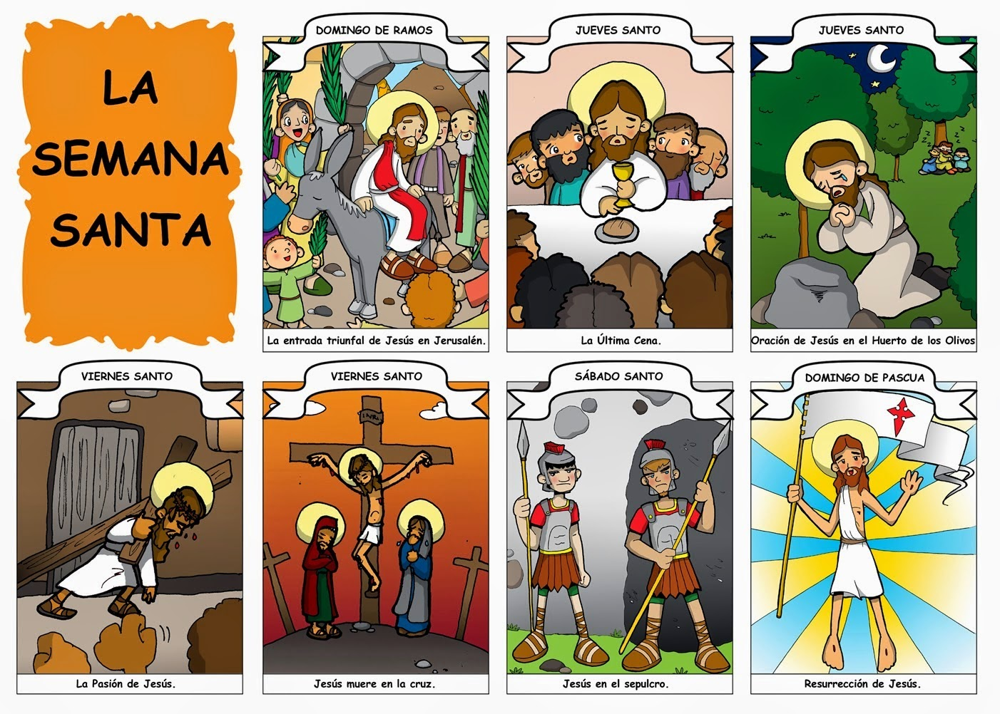
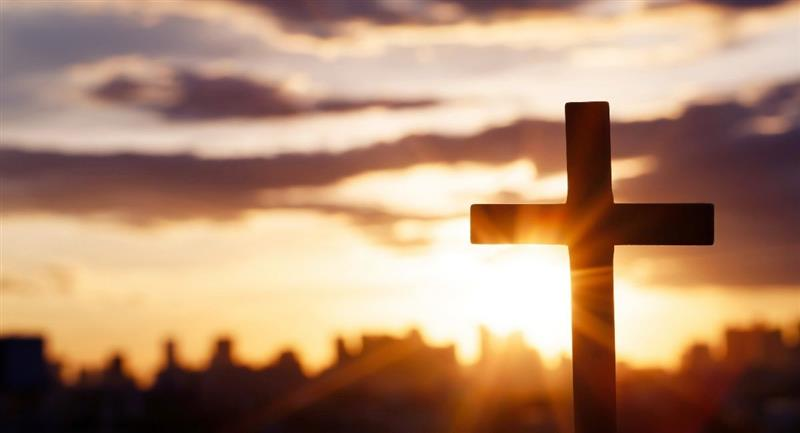

🕊️La Historia de la Semana Santa
La Semana Santa es uno de los momentos más importantes del calendario cristiano. Es un periodo lleno de recogimiento, fe y tradición, en el que los creyentes conmemoran la pasión, muerte y resurrección de Jesucristo. Aunque su origen se remonta a los primeros siglos del cristianismo, su significado ha trascendido lo religioso y se ha convertido también en una expresión cultural muy rica en muchos países, especialmente en el mundo hispano.
Domingo de Ramos: La entrada triunfal
La historia comienza con el Domingo de Ramos, que recuerda el momento en que Jesús entra en Jerusalén montado en un burro. Las multitudes lo reciben con alegría, agitando ramas de palma y olivo, gritando: “¡Hosanna al hijo de David!”. Fue una entrada humilde, pero simbólicamente poderosa: el Mesías llegaba no como un rey conquistador, sino como un servidor de paz. Los evangelios cuentan que la ciudad estaba llena de peregrinos que acudían a la Pascua judía, y muchos ya conocían a Jesús por sus enseñanzas y milagros. Pero esa misma multitud que lo aclamó, días después cambiaría su clamor por un grito de muerte.
Lunes a Miércoles Santo: Tensión y traición
Durante los días siguientes, Jesús predicó en el Templo, confrontó a los fariseos, y continuó su misión. Mientras tanto, crecía la tensión entre él y las autoridades religiosas, que lo veían como una amenaza. En este tiempo, Judas Iscariote, uno de sus doce discípulos, pacta con los sumos sacerdotes para entregar a Jesús a cambio de treinta monedas de plata. Así comienza a gestarse la traición.
Jueves Santo: La Última Cena
El Jueves Santo es uno de los momentos más cargados de simbolismo. Esa noche, Jesús se reúne con sus discípulos para celebrar la Pascua. Durante la cena, les lavó los pies en señal de humildad y les enseñó el mandamiento del amor.
También instituyó la Eucaristía, al partir el pan y compartir el vino, diciendo: “Este es mi cuerpo... esta es mi sangre”. Con estas palabras, dejó una herencia espiritual que hoy es el centro de la misa cristiana. Esa misma noche, después de la cena, Jesús fue al Huerto de Getsemaní a orar. Allí, en medio de una profunda angustia, fue arrestado por los soldados tras ser señalado por Judas con un beso.
Viernes Santo Juicio pasión y muerte
El Viernes Santo es el día más solemne. Jesús fue juzgado por el Sanedrín (tribunal religioso judío), y luego llevado ante Poncio Pilato, el gobernador romano. Aunque Pilato no halló culpa en él, cedió ante la presión de la multitud y lo condenó a morir crucificado. Su cuerpo fue bajado de la cruz y sepultado en una tumba prestada, mientras sus seguidores quedaban abatidos por el dolor.
Sábado Santo:El silencio
y
la espera
El Sábado Santo es un día de silencio y luto. Jesús yace en el sepulcro, y sus discípulos están escondidos, tristes y temerosos. Es un día de espera, pero también de esperanza.
En muchas tradiciones cristianas se celebra la Vigilia Pascual por la noche, donde se bendice el fuego, el agua y se celebra la luz que vencerá a la oscuridad.
Domingo de Resurrección: La victoria de la vida
El Domingo de Resurrección es el día más glorioso del cristianismo. Según los Evangelios, al amanecer, algunas mujeres fueron al sepulcro y lo encontraron vacío. Un ángel les anunció: “¿Por qué buscan entre los muertos al que vive? No está aquí, ha resucitado”.
Jesús resucitado se apareció a María Magdalena, luego a los apóstoles y a muchos otros. Su victoria sobre la muerte confirma su divinidad y trae esperanza de vida eterna a todos los creyentes.
Este día marca el final de la Semana Santa y el inicio del tiempo pascual. Es una celebración de alegría, luz, renovación y fe.